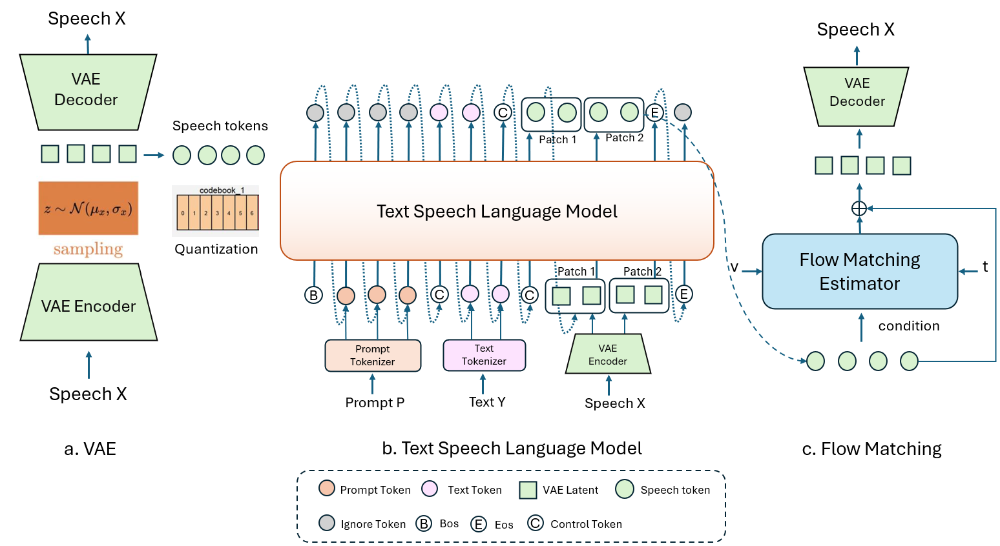

AR based model Demo Page
Author: Songrui Wu
Email: sowu@microsoft.com
Team: Voice AI Speech
Contents
AR Model Architecture

An Overview of the ArFlow Model Architecture (a) The VAE encoder functions as a self-trained generative model. It is used to extract speech tokens through VQ-based quantized representations. (b) The autoregressive language model generates speech tokens based on the given text and speech conditions. (c) The flow matching model produces continuous speech representations from the generated speech tokens. Subsequently, the VAE decoder converts the flow matching output into high-quality speech.
Azure Platform High Quality Voice
| Recording | Text | Non-AR Model(Old) | Arflow2(New) | |
|---|---|---|---|---|
| Ava (en-us) | Oh my gosh, that's AMAZING news! Congratulations! How are you feeling about it all? Any excitement, nerves, or a mix of both? Tell me everything! | |||
| Oh no, I didn't mean to disappoint! How about this: If you want something quirky and fun with lots of laughs, go for Blue Man Group. If you're looking for something awe-inspiring and magical, Cirque du Soleil is your best bet. Both will make for a memorable first date, so you can't go wrong. | ||||
| Andrew (en-us) | I'm over the moon! I can barely contain my excitement. This is everything I've been working towards, and now it's finally happening. I can't wait to dive in and start this new chapter of my life!" | |||
| Oh no! Ember wiggled and squirmed, but the narrow passage was too tight for her. Zephyr noticed her predicament and quickly flew back to her side, reassuring her that he would find a way to help her through. | ||||
| Xiaoxiao (zh-cn) | “哦，天哪，开始了。你知道吗？我走进这个即兴表演时，心想‘嘿，这可能很有趣。也许他们会给我个惊喜。’结果你猜怎么着？惊喜就是我被拉上台给大家表演单口相声了。上次被拉进某件事时，我最后被拉到俄亥俄州参加一个堂兄的婚礼。是的，俄亥俄州。你能想象吗？不过先不说我那些悲惨的家庭聚会了。” | |||
| 嗨，美丽的朋友们！欢迎回到我的频道。今天我们将揭开最新的美妆必备品的神秘面纱。不论您是美妆爱好者还是想提升您的妆容，这里都是您的好去处。别忘了订阅频道，给我们一个赞吧！现在让我们开始今天的精彩美妆测评！ |
Emotion Control
| Emotion | Text | Arflow2(New) |
|---|---|---|
| Netrual | I walked into the room and took a seat, observing the people around me; I didn't feel particularly excited or anxious, just curious about what would happen next. | |
| Happy | I felt a surge of happiness when I saw my friends waiting for me at the surprise party; it was such a joyful and heartwarming moment. | |
| Sad | After hearing the news about his old friend's illness, he stared out the window, feeling the weight of the world pressing down on his shoulders. | |
| Angry | His fists clenched and his voice rose as he confronted the person who had spread lies about him, unable to hold back his intense frustration. | |
| Scared | Walking alone in the deserted street at night, she quickened her pace, her heart pounding with every step as she glanced nervously over her shoulder. | |
| Surprised | When he opened the gift and found the watch he had been admiring for months, his eyes widened and he could hardly believe it was real. | |
| Hesitant | I stood at the edge of the stage, my hands trembling slightly as I took a deep breath, feeling unsure about whether I should go on and deliver my speech. | |
| Hurt | After hearing the harsh words from someone I trusted, I walked away slowly, my heart aching and my eyes filling with tears from the unexpected pain. | |
| Excited | With a big smile on my face, I could hardly sit still, eagerly waiting to board the plane for my first trip abroad, thrilled by the adventure ahead. | |
| Calm | Sitting by the lake, I closed my eyes and took a deep breath, feeling a serene sense of peace as the gentle breeze rustled the leaves around me. | |
| Urgent | I rushed down the hallway, my heart pounding as I tried to find the right office; the situation was critical, and I needed to deliver the message immediately. | |
| Shy | I looked down at my feet and blushed, barely able to make eye contact, as I introduced myself to the new group of people at the gathering. |
Paralinguistic Control
| Paralinguistic | Text | Arflow2(New) |
|---|---|---|
| Laughter | [laughter] The sun set behind the mountains, painting the sky orange. | |
| The sun began to set over the horizon, [laughter] casting a warm, golden glow across the calm waters of the lake, creating a mesmerizing and tranquil scene that felt almost otherworldly. | ||
| Clear_throat | [clear_throat] Hi, I'm new in town and was wondering if you could recommend some must-see attractions. | |
| Thank you all for coming; your presence means a lot to me [clear_throat] . | ||
| Yawn | [yawn] Let me share a story that perfectly illustrates the point I want to make. | |
| I reached out to knock on the door but paused, [clear_throat] my hand hovering in the air as I second-guessed whether it was the right decision to visit him. | ||
| Cough | I feel like I could fall asleep standing up, [cough] I'm completely exhausted. | |
| [cough] One of my favorite hobbies is painting; it allows me to express my creativity and unwind after a long day | ||
| Sigh | [sigh] One of my favorite hobbies is painting; it allows me to express my creativity and unwind after a long day | |
| I tried so hard to meet the deadline, but despite my best efforts, it just wasn't enough. [sigh] |
Model Applications
Call Center Agent
Call Center Domain SFT voice: In the call center domain, we are focusing on creating realistic and engaging voices for our customer, Nuance. This model is designed to simulate the nuances of a telephone channel, including background noise and a casual conversational style. These elements are carefully integrated to ensure that the agent's voice sounds natural and authentic, enhancing the overall customer experience.
Kids AI Teacher
Kids AI Teacher: In the Kid AI Teacher scenario, it is essential for the teacher's voice to be sweet, patient, and lively, with a relatively slow speaking pace. We utilized GPT-4o to synthesize audio that embodies these domain-specific characteristics and performed timbre transfer to achieve the desired voice quality.